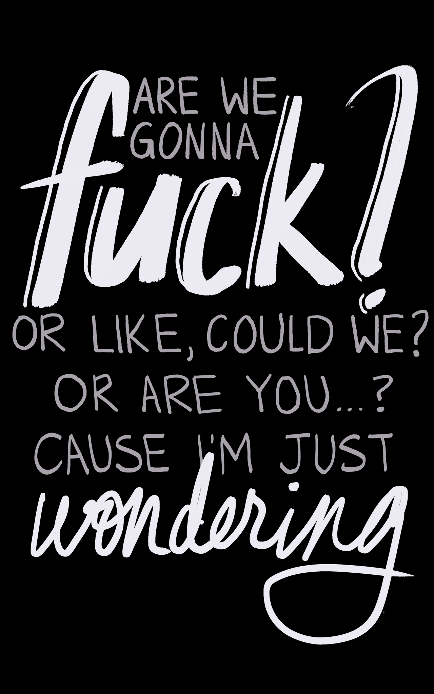
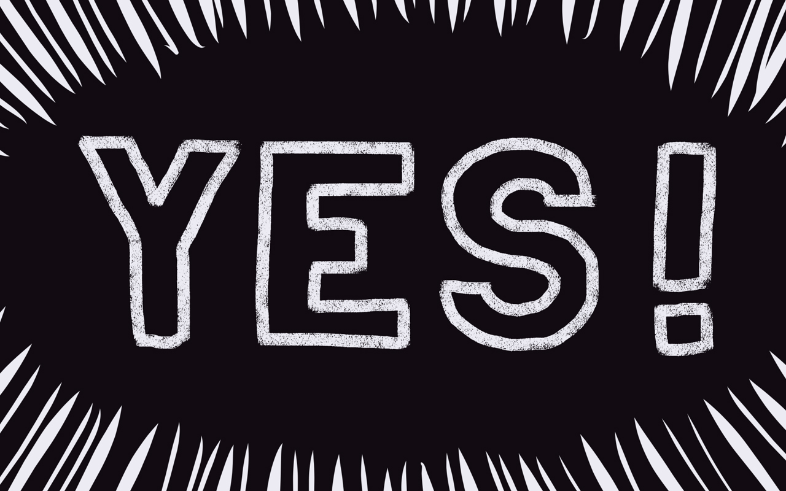
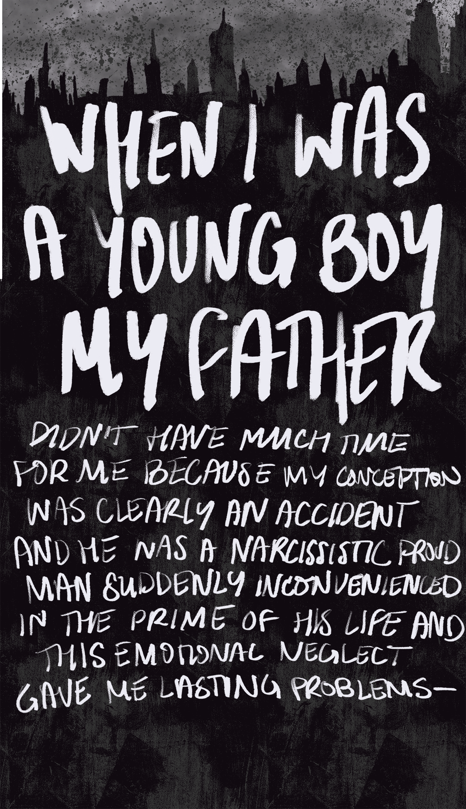
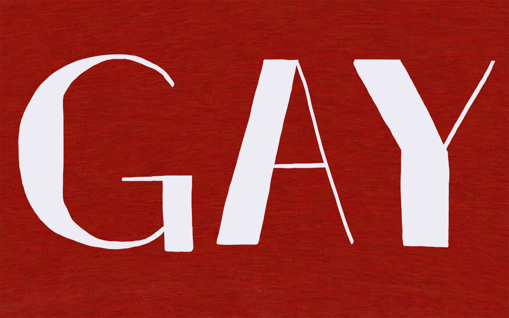
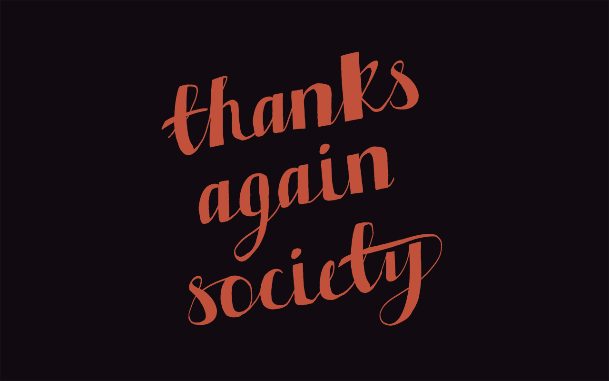
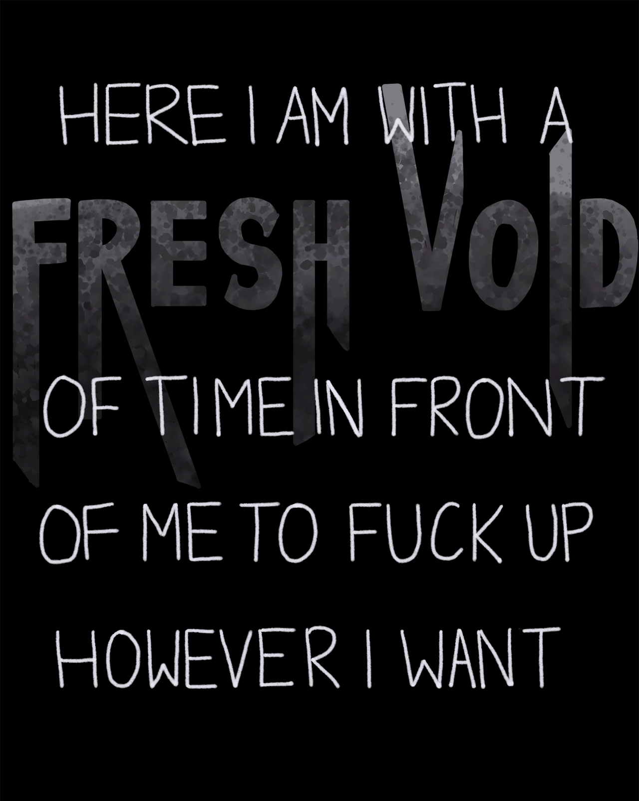
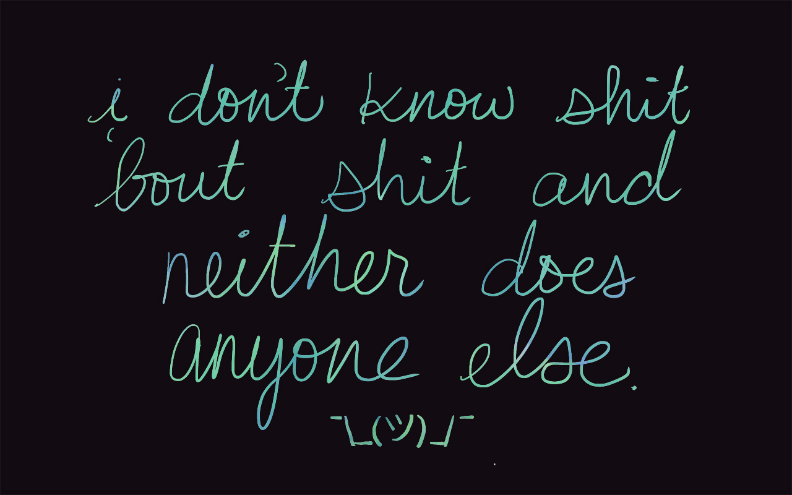
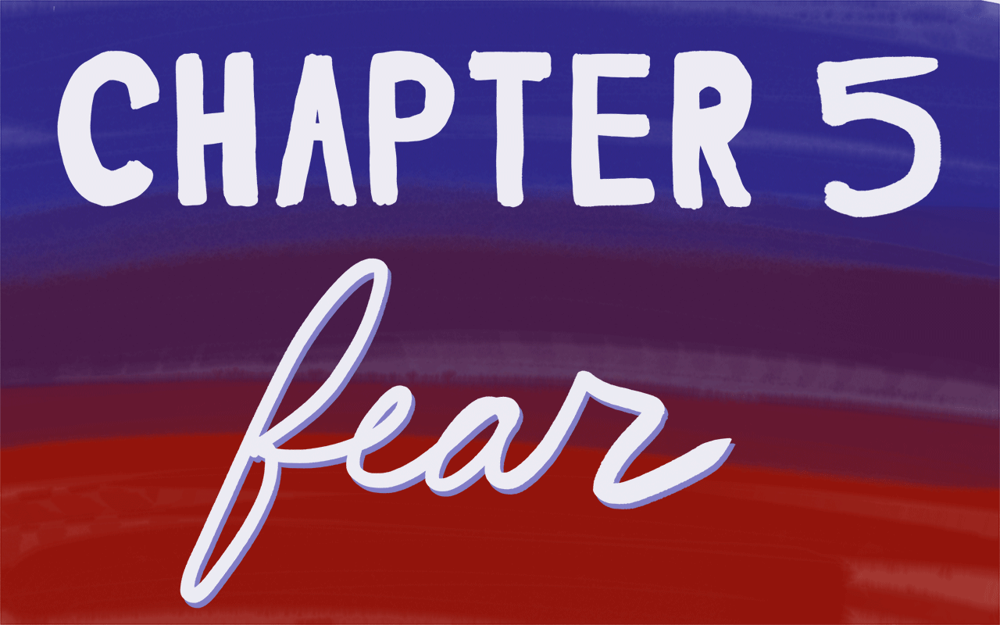

click here to listen along.
hello internet.
Sex! Secrecy! And a whole lot of internal screaming.
Starring Daniel Howell. One of the greatest mysteries of our generation.
What is Dan's sexuality?

Sex, the foundation of life and the only thing we're really supposed to do. Everyone's obsessed with it. You bunch of degenerates.
In the list of things that identify a person, one of the most important for other people to know is their sexuality. For, if sex is the primal force propelling all of these humans forward by their hips, they have to know:

Now, we live in a heteronormative world, which is a long scary word that makes people feel attacked for some reason.
(Shh, it's okay.)
What it means is people are presumed to be straight. If you're not, then at some point, you have to come out, which is a whole thing. Or people might just try and guess based on something you do or the way you act, because yay, stereotypes.
So this is something you have to be clear on, because if you're not, how are all these other people that aren't you going to cope? But I'm pretty sure no one that knows me thinks I'm straight. So I don't really need to come out as much as just clarify what the hell is going on. As here I am at age 27 and my sexual preference is seemingly still a vague, debatable, confusing, impenetrable mystery. But why? And what is it?
Well, those are some big questions. Are you sure you wanna know my answers?

Okay, well, if you say so, 'cause this is a complicated and sensitive issue, and when it comes to me, boy, there is a lot to unpack here and it is a total clusterfuck. So strap yourselves in and let me tell you a queer little story about a boy named Dan.


I was an only child for seven years and with working parents this meant I had to make my own fun so I was very imaginative and loud, which is something that my teachers used to say quite a lot followed by, "However …”
Here I am, age five. Look at me.
Cute, poised, sassy, turning out this photo shoot like, sorry, Grandma, I stunted on this set. Are you seeing this?
In almost every way, I literally peaked age five.
I loved being the centre of attention. People said I had an infectious happiness, that my beaming smile brought them hope and joy.
People that know me are laughing right now.
But a boy, in the 90s being happy and generally polite acting? Sounds kinda
gay
if you ask me. Literally masculinity was so fragile, people were so proud and scared and society so aggressive that a boy smiling, appearing to be empathetic, or in any way emoting was seen as a threat.
“How dare they laugh and feel comfortable? They must be soft and weak and girly and
gay.
So basically, thanks, Grandma, for raising me to be a nice child, you dick.
Just kidding. That's a joke and I told you not to watch this video because it would be rude so if you send me a disappointed text telling me you're offended, I don't know what to tell you. Although, now I think about it, you did make me go to church for 10 years, which in hindsight probably also didn't help the issue here, so …
But then it was time for little Dan to go to school and this is when it all went wrong. ‘Cause it turns out most children? Evil pieces of shit. Doesn't matter if you try to raise a happy innocent child, throw that kid into school, aka, a literal Mad Max Battle Royale with the feral offspring of your local community? Yeah, that crap'll be undone in about two weeks.
I was six years old running around the playground pretending to be Sonic the Hedgehog or something when two brothers come up to me aged seven and eight with an unexplained aggressive look in their eye. And the younger one pushes me to the ground, kicks me in the stomach, and just says,

This was the first time I ever heard that word.
Well, I don't know what the heck gay means but apparently it means people kick you on the floor so that ain't good.
I didn't know this child or give them any cause to have an opinion on me. And, actually, I never directly interacted with them again.
What epic clustershit of failed parenting and general culture brought this tiny child to get angry and attack someone, then call them gay for looking like they were having fun outside?
Are you okay, 1990s?
And so my relationship with sexuality began.
I wasn't looking to define myself as a child indiscriminately playing doctors and nurses with various friends until once somebody's mum walked into a room to find three fully naked children sat on a bed sticking sellotape to each other's butts. Yep. Which, I don't recommend, also, Jesus Christ, the poor woman that saw that.
Then you get to the magic age around 10 or 11 where everybody suddenly wants to pretend they're totally a cool teenager who's doing all the drugs and the sex and the fights, totally. Boy, gay was a really popular word back then.


This one little shit who I won't name was one of the school bullies and he loved the word gay. He had it in for me and I have no idea why. You know me, Mr. Winnie-the-Pooh-meets-Slender-Man. Well, when I was 10, just Winnie the Pooh. I didn't do nothin' to no one ever and yet this guy used my pacifism as a punching bag where any group situation was an excuse to single me out, call me gay for some reason, and then make everyone else exclude me because they were scared of him.
I had a girlfriend. We dated for six whole weeks. We kissed in a game of spin the bottle once by literally sucking on each other's faces. Then she ended dumping me over speakerphone at a birthday party that everyone in my class but me was invited to but, hey.
I don't know what I was doing wrong, but at this age, I understood one thing. Being gay, whatever that meant, was clearly the worst thing you could be. On a Darwinian level, I was being told,
“Okay, bitch, ‘Survival Code.’ Don't be this apparently.”
Evolution.
Plot twist, this bully I think he was a bit gay because once he asked me to have a sleepover at his house and I thought that was me finally getting socially accepted only for him in the middle of the night to come up and ask me, "So who's going to be the boy and the girl?" I was an innocent smol bean who didn't really understand what he meant because, to be honest, I didn't actually understand how babies were made yet. But, needless to say, I think he was disappointed.
Wow, closeted child turns into homophobic bully.

But this whole primary school journey was really just an amuse-bouche for the full six-course tasting menu of suffering that would be secondary school.
I went to an all-boys school. It was a literal hellscape. I thought it was hard making it through a school of 200 kids with two or three bullies. Try over a thousand where a clean 800 are fully psychopathic gorillas fuelled by testosterone, Red Bull, and Eminem albums. Making sure that the word f— no longer means an innocent bundle of sticks or a cigarette anymore in the British lexicon. Nope, now it was a cool homophobic slur along with gay, gaylord, gayboy, puff, pufter, ponce, batty, batty boy, bum-boy, bender … shit, this is so long.
People have a lot of words for something they don't wanna think about.
Look at me in this stupid blazer. Oh, “You'll grow into it at some point in the next four years,” thanks, mum. Day one, kid in form class, some stupid hedgehog-looking motherfucker side eyes me and says, “What you lookin’ at, puff?” First interaction at a new school. Great!
My entire existence on a daily basis then becomes navigating this school like I'm in the bloody "Maze Runner" trying to avoid aggressive pricks with chode ties. And you know, being verbally abused for being a nerd or a Greebo at least felt relevant to me at the time. Greebo, definitely one of my faves there and I'm sure that Korn and Slipknot would have been proud to have 12-year-old me as a fan.
I kinda knew who I was in the hierarchy at that point. I was essentially a theatre kid who spent all of his free time playing Runescape on the AOL browser on his mum's PC instead of football. I accepted it.
But at least I wasn't actually this gay thing people kept throwing around because by now I understood a gay is a boy who fancies other boys. And, to be honest, I don't really feel like I've ever fancied anyone before …
Then puberty happened.
Oh yeah, this is fun, tingly feelings, I smell bad. It was quite fun dribbling on this girl's face playing Truth or Dare. Maybe later we'll go behind that bike sheds and —
There I was, sat in English class, my friend next to me. I watch as he delicately removes a pencil from its case. We briefly make eye contact as he flutters his long black eyelashes with a blink before staring forward.
His eyes are so bright and beautiful yet they seem so sad and deep with emotion. I wish I could just understand — Oh fuck, I think I’m a bit gay.
You're telling me this whole time I actually have been the bad thing that people keep calling me?
Shit.

Oh, do you hear it that faint hum, something coming from a deep, dark place too powerful to control?

Short version, I fall hopelessly in love with a friend of mine who doesn't feel the same way which crushes me into a million tiny pieces and years later, actually, it turns out he was gay the whole time. He just really specifically didn't like me.
Double kill.
Here I am, 13, crying to Evanescence alone in my bedroom feeling like there's no point in really being alive as I'm clearly a faulty outcast person that has no place in the world. I stopped going to church with my grandma because I felt like I wasn't really supposed to be there. Also, by this age, the whole Christianity thing didn't really make much sense to me. And the adult services were dry AF compared to colouring in a picture of Jesus' face at Sunday school, so other than the free tea and biscuits they gave away after the sermon, religion didn't really have much to offer me.
Damn, there was some good biscuits though. I miss that.
But wait, all is not lost yet. Do you see that?

I swear to God, emo is one of the best things that happened to pop culture in the last 20 years. As well as inventing eyeliner and skinny jeans, a new word hit the theatre/nerd/goth/band kid corner that would change my world forever.
Bisexual.
You can be normal and gay at the same time? And some people think it's cool? Well, slap a long fingerless glove on my arm and sign me up to Myspace 'cause Mum, I'm bi.
It was a good term 'cause it was a catchall for anyone who felt sexually confused or curious that didn't want to commit to something stronger which is very me. Big commitment issues. Thanks, fam.
To be clear, regardless of whatever the 2006 teenagers’ thoughts and feelings were, being bi is valid and should not be excused away or erased by anyone. Thank you.
From this moment, I was a loud and proud raving bi to my close friends and the strangers on the internet who saw my clearly-labeled sexual preference on my Myspace page. And the emo friends I made at this time were awesome. We just used to hang and make out with each other and listen to music and drink bottles of Smirnoff Ice until we were sick on each other with no judgment.
The judgment came several years later looking back at the photos that you can't delete.
So I didn't need to tell my family or people at school anything. But the thing is, with a Myspace page, anyone with an internet connection can read it. And so the rumours started spreading through my neighbourhood that Dan Howell was, in fact, a bisexual.
I had a friend in French class who one day, totally unprompted, just turned to me and said, "Hmm, yeah, I thought so. You give off a bi vibe." A bi — what the fuck is a bi vibe? Great, yeah, nothing to make a 15-year-old feel self-conscious about his behaviour like being told he emanates a bisexual aura. What am I supposed to do with that?

Turns out it was actually a social upgrade from being called gay all the time 'cause bisexual was a new word that only referred to sexuality, so people actually had to decide how they felt about the fact I was attracted to boys. As opposed to gay which as we all understood is synonymous with bad and also implies a general threat/plague/curse/evil force that simply must be destroyed.
People at school were actually almost nice to me with curiosity about it and a few of the boys that previously loved to just generically call me gay while throwing a compass at me or something, now started to

But then, I entered the dark ages, and no, I'm not talking about my hair because I was never actually cool enough to commit to dying it black. As quickly as they arrived into my life, my emo friend group vanished into the night. Like the tip of an eyeliner pencil snapping or the HTML on your intricately-crafted MySpace page falling apart when the host websites of your embedded gifs die, so, too, did my social life.
One had to suddenly focus on school, another moved town, two of them just fell out with each other and started hanging out with their old friends again. Well, we don't all have backup friend groups, Lindsey. I went all in on the emos. You're telling me I have to go back to sitting in my kitchen playing Runescape now — thanks a lot.
So, for a year I literally had no friends, and this is when the bullying at school really stepped its pussy up.
The things people used to say offhand to me in a corridor were now said loudly in classrooms where everybody would laugh. People used to sing songs about me being gay on the bus while my fellow nerds sat around me just stared awkwardly out of the window not wanting to get involved. People shouted things out during GCSE exams in front of the whole school and the low-key pushing became punches. People used to wait for me after school just to throw things at me. Once a guy put his hand around my throat and pushed my head against a coat peg in the locker room while everyone was watching and just slapped me for five minutes.
But I never reacted.
I never cried or got angry or fought back 'cause then I'd be giving them what they wanted and I refused to play along.
But this way of dealing with things definitely had an impact on my relationship with emotion going into life.
I became a total outcast. No one wanted to come near me out of fear that they'd get targeted, too. So no one ever stood up for me.
Teachers at the time obviously did nothing, in fact, one of them saw this happening to me and laughed 'cause you know, boys will be boys especially the gay ones that get killed by the other ones, am I right? Classic lad banter.
And home … see, keeping this on the topic of sexuality and not economic class, violence, addiction, and health issues, let's just say some shit was going down. I didn't think I could ask my family for help or share my feelings about this, mainly due to my dad. Funny guy, kind of a woke hippie who did and said a lot of things I did respect, but at the same time used to walk around the house saying how he hoped someone he had a problem with at work would "die of bum cancer."
Yep, so picked the one area to be a bigot that would further traumatise your child. Nice.
This experience — coming from a childhood hearing the word gay meaninglessly thrown around as an insult at home and school, in music, on TV, to then realising I’m actually kinda gay, to then very specifically being attacked for it — was traumatic. The world was clearly telling me if I ever wanted to be accepted by anyone or, in my particular environment, survive, I couldn't be gay.
I was afraid of it, literally homophobic of myself.
I am talking Pavlov, sunken place, North Korea-level mind alteration that made me terrified of and repulsed by this part of me. This is called internalised oppression. It's a real thing and it's some real shit.

From this moment I was no longer advertising myself as bi. No, BRB deleting that Myspace real quick, xD lemme get on that Bebo. My Chemical Romance? No, I'm listening to what’s this, N-Dubz? Jesus Christ.
I go away for the summer break and come back to school quiet and serious and fully straight. I needed me some new friends that were a bit higher up the social ladder, you know what I'm saying, for security, so I go ahead and join "The Inbetweeners". Literally, this group of friends, the exact middle ground between nerds and desperately wanting to be cool. And oh, how desperate we were.
The great thing about these friends was they knew loads of girls.

The problem with that was it's not like everyone just forgot everything that's been said about me and this group of friends? Casually homophobic pretty much all the time. And also they hung out in places near some even more aggressive and super homophobic peeps.
Just full-time Runescape would have been a better in hindsight.
I find myself going through the same shit at school but now voluntarily going through it at the weekends from the people that are supposed to be my friends thinking I'm doing the right thing whilst constantly telling myself I'm now totally heterosexual. So, I did what many people choose to do at that point, and I got a girlfriend.
But this is pretty messed up because I really liked this girl. In fact, I loved her, as a friend, and I was genuinely attracted to her. But I was so afraid of sexuality, I didn't even wanna do anything straight in case I had some weird gay panic that I was totally frigid and I led her on. And when she got pissed at me, understandably, for being a terrible boyfriend, I just felt even worse. This was someone who I liked that I was hurting and lying to but I couldn't leave as then I'd have no armour.
The beautiful irony here is having a girlfriend didn't in any way stop the abuse 'cause remember gay is a great all-purpose general insult. Call someone gay today and we'll throw in a free set of steak knives.
And when these neighbourhood teens started heavy drinking and getting into drugs, things suddenly got quite scary as people joked about setting fire to a tent as I slept in it at Reading Festival. Or saying, "You know that notoriously unstable guy? Yeah, he said he's gonna kill you next Saturday, awkward.”
This was definitely the lowest point in my life. I just felt totally alone, confused, and I deeply hated myself. I used to ask God, in case he was there, to please just make me straight and everyone stop. But I saw no end, no escape, no way to change the world or who I was. So one evening I thought fuck it and I attempted suicide.
I say attempted, because just before it was too late I thought,

Felt kinda bad for a few days, otherwise, I pretended it never happened and I didn't tell anyone. Until now. Literally.
Hmm, I know, pretty dark, right? But hey, spoiler alert: things kinda worked out. I mean, still gotta lot of issues, but here I am.
I'm so glad I failed. For so many reasons.
For the people in my life.
For the future I would've wasted.
The most important being that I thought I was trapped in a situation forever when in reality, the entire world I lived in and my life changed completely.
I thought it was hopeless, when in reality, there was so much to hope for and that's it. Time changes everything.
With the lives that we have, we can try anything we've dreamed of.

So yeah, school age six to eighteen, I'm gonna give that a bad Google review. The thing is, I did stand out. I've always been a loudmouth, class clown, annoying shit. Since graduating, it turns out half the people I knew were fuckin' gay.
That group of friends I had, all lovely people now. Five of them were gay, five gays! That is statistically irregular.
Oh, but they flew under the radar. All I'm saying is I wish people just hated me for being annoying and immature.
Leave the gays alone!
My light at the end of the tunnel was university. I was gonna get my A levels, move to a new town, and ghost these bitches. But, I took a gap year first to earn some money which was very boring sitting at home and working at ASDA where I was not happy to help; my shift started at 5 a.m. on a Saturday.
Signed up for a Twitter account to run my mouth off and then bam.
“So my name is [Dan.]”
My YouTube story begins, a new chapter of my life to redefine.
So you know what I do? Get a Formspring because nothing gives you that attention feeling like one of those anonymous question and answer websites that are inherently toxic and no one should use. And straight out of the bat bisexual Dan returns. 'Cause hey, just like Myspace, I'm only telling a few people on the internet right now. It's not like one day I'm gonna get so many followers that random strangers and my family might see it.
Wow, I had a lot fun with many different kinds of people in 2009. Let's just say I got a lot out of my system. Got a couple of things in my system, too. Sorry.
And this is when, through the magic of the internet, I met Phil.
And, obviously, we were more than friends, but it was more than just romantic. This is someone that genuinely liked me. I trusted them.

And the relationship we formed at that point was something that I needed in my life. We are real best friends, companions through life, like actual soulmates, not that souls are a real thing that exist.
It's so lucky to just find someone you can be that compatible with and especially to anyone that has experienced the kind of self-hatred that I have dealt with, one person accepting you can make all the difference.
And I bet so many people wanna know so much more about that which, honestly, I take as a compliment. But here's the thing. I'm somebody that wants to keep the details of my personal life private.
So is Phil.
I know lots of people these days, thanks to social media, want to share and monetise every aspect of their life and then as soon as something changes suddenly it's this huge drama because everybody got invested in the story of your life like it's a soap opera.
I don't want that.
I wanna do certain things without an audience. I wanna be spontaneous. I don't wanna feel afraid to take risks.
I want to enjoy totally fucking something up and not have to post a statement about it.
And if anyone thinks people really have to share these things about their life, you need to rethink your position.
And look, I understand that sex is a fun and interesting thing to talk about. I get it. I am also a disgusting pervert. But the specific minutiae of who I be fucking, when, why, where, how long, how?
Ehh, I mean?
Sexuality is a general fact that it can be very useful to know about a person for several reasons, but we can't force people to disclose that either. We don't know this person's life story, what they've been through, if they haven't told people, if they'll lose their job, if they're in danger. There are so many reasons someone might not be open about it.
We can preach the message that being out is good, but aggressively speculating or trying to out someone is really bad.
They might not be gay, in which case we're just harassing someone and probably stereotyping. And if they are there's gonna be a reason why they haven't talked about it. So I don't wanna see any responses to me finally talking about this like, “No one is surprised.” “Dan we been knew.”
Wow, you huge galaxy brain genius. What's it like walking around with all those brain cells in there working overtime? What, you got like three in there? Don't lose your balance, mastermind.
I haven't exactly been subtle have I?
“I’m an awkward, sexually ambiguous nerd.”
“What the fuck even is your sexuality?”
That's not the point.
I'm already dead inside so it doesn't matter here, but to me if someone's reaction to a person coming out is just, “Yeah, I knew,” they're showing no empathy towards the issue or that person. They're just making it about themselves like it was a fun piece of gossip they already knew. All we have to do is listen and be accepting.
So anyway back to the tale. Whilst things were looking up for Dan aged 18, things quickly got messy again.
Wow, that beats the emo streak of temporary self-acceptance by like six months, nice.
There was a point around 2011 where the relationship with my audience shifted from what felt like direct communication between me and individuals that just saw me as a comedy creator to communities of people that formed to talk about me when I wasn't there. Which is fine, but for some people it was about getting generally invested in me and my real life, which I thought was a bit strange 'cause inevitably, like anyone who puts themself out there, some people started to really dig into my private life to find out information about me that I wasn't ready to share.
And this was around the same time that YouTubers finally started to get mainstream recognition in the British press. We had the BBC knocking at our door trying to offer Dan and Phil a radio show.

And we love working together, so when all these opportunities came for Dan and Phil, we were really excited, but I was also scared as people clearly knew I wasn't straight and I hadn't told my family that. None of my old friends knew about this, and what me and Phil had was ours and personal, and yet, some people were trying to get access to it for their own satisfaction. It was no longer a few people on the internet, no big deal, so I just shut down.
It felt like I was back at school again, surrounded by threatening people trying to expose me for their entertainment. Most, I'm sure, just wanted what was best for me and I feel such genuine sadness and am sorry that I couldn't be closer to and more truthful with the people in my life that were just trying to be nice, but I wasn't ready to deal with it at this time so I had to do something to contain it.
I definitely sent some mixed messages. Some were just joking around, others were super defensive that in my panic came across like, “I’m now telling everyone I'm totally straight,” when all I really meant was, “Please fuck off and don't invade my privacy, you creepy stalkers, thank you.”
But this experience seriously triggered some PTSD in me and I was back in the dark place. I didn't want to just disappear from the internet to escape it and throw away this creative hobby that actually started paying rent.
(Thanks.)
So I just decided to put anything to do with my sexuality in a box to come back to later as I was still processing my past and I wanted to understand my identity on my own terms and timeline and not just have it hijacked as fuel for people's sexual fantasies or some headline in an article.
And whilst we're not exactly living in a utopia yet here on YouTube, the general internet culture only five or six years ago was a much less wholesome, progressive place as this little bubble is now. Sure, a lot of people probably would have been supportive, but there was just as much open bigotry and general toxicity 'cause people felt less accountable and it was okay to say certain things 'cause it's just on the internet and I couldn't handle that at the time.
And, generally, I can handle a lot. I have big hands with a very wide reach … for playing piano, you fucking — get your mind out of the gutter.
We can't ask people to just put their lives on hold to address their sexuality first. If a kid dreams of being a footballer and age 18 gets signed to a club and all their dreams come true but they're scared to come out because of the insane homophobia in that community, they shouldn't turn it down.
Yes, it's so important to be truthful about who you are and open and proud in front of the world but it's our society's fault that these people are scared to say who they are.
So let's all focus on making it a welcoming place and people will come out when they are ready.
So when was I ready? Well, it's always been on my mind that I need to talk about this at some point. I couldn't just keep going forward in my life ignoring it — not only just so I can be authentic, which is very important for general existing, but also just letting people know what kind of sexual attention I want from the world.
All of it. From everyone. God, I'm so thirsty.
And if anything motivated me, it's the idea that I can help someone else 'cause that's basically my whole career, isn't it, admitting to shit that I've been through so you will feel better about yourselves. There we go, you're welcome.
I have a platform and a following of millions of people, many of whom I know have been through exactly what I have. And if I tell my story as painful and flip-floppy and flawed as it is, I know it will mean something to someone as every time someone speaks openly about sexuality, it saves lives.
I'd never met a single out gay person until I was 18. And if I had, or even just seen better representation in the media, I wouldn't have felt so totally alone. I wouldn't even be saying this to you now if it wasn't for TV shows, musicians, and public figures in the last couple years reinforcing this to me. It doesn't matter if I was living the life privately as there was still so much confusion about my feelings and fear.
But things are better now, on the internet, on TV, in my real life. It's not perfect, but it feels safe enough in this space right now for me to feel confident. So thank you, sincerely, to all the brave people that came before me and to any of you that made this world seem welcoming for me. And instead of procrastinating from this by focusing on work, which was a way for me to ensure my own independence and survival in case I was rejected, or just doing things for other people to take my mind off it instead of asserting my own needs, which my therapist keeps telling me is one of my biggest problems.

Now look, we all have different experiences in life. Some of us are lucky, some of us not. It just so happened that the first 18 years of my life were horrendously shit.
It failed me.
But we get dealt cards from the start, too. If you look at my life, I was born into this world as an able-bodied, white, cis man in Britain which immediately gives me so much privilege in this current world and I am fully aware of how much harder making it to today could have been for me, which is why we all need to stand up for equality and social justice even if it doesn't apply to us.
No one stood up for me when it mattered the most and that almost cost me everything.
So if you see a woman being harassed, a gay being threatened, someone muttering something racist, say something, do something because if you're still or silent, the victim will just think that you are against them, too. We all have a responsibility.
This tale was just some of the stuff relating to sexuality. We all have a whole sob story if we wanna tell it but I just wanted to explain the journey of how I got to this point and overcame the obstacles that tried to block this path.
And now, I've arrived.


Here's the thing. You want me to talk candidly about sexuality as if it's something that I understand? I don't know what it is, why it is. Turns out no one knows. I've been sitting here for years waiting for scientists to just work it out like, “Bleep, bloop, oh, this is why and exactly how it's different for people. There we go.” Thinking I shouldn't run off my mouth on the internet in case my theories and opinions on varying gayness get debunked next week.
Well, I waited long enough and it didn't happen. Science, ya fucked up, you let me down. And I fully expect to have to delete this video in two weeks when you find out all the answers suddenly — thanks a bunch.
What makes someone gay or straight or all the things in between?

This is a mess.
Yet, people want you to give them a word because that's how humans communicate. With words that have meanings. Which is why our disgusting species is impatient, stupid, and obsessed with labels. And this applies to everything: sexuality, gender, political identity, what obscure genre of synth-wave you listen to.
People just want a label that represents something they understand so they already know how to feel about you and don't have to bother thinking.
“Oh, you're a feminist, well I don't need to know anything more.”
“Oh, you're a leftist.”
“Oh, you're a K-pop fan, but but but but—”
If people just want to find a way to disagree with you or dislike you, they can refer to the label and turn off their brains.
(Hey, what does my label say? Huh.)
The issue is, especially when we start talking about the writhing mass of confusion and suffering that is sexual and gender identity, the limits of language and specific terminology become a big problem.


It's not like humanity is all in agreement right now. I don't like the stereotypes and drama that come with all this terminology so I'm just not gonna use it.
Thing is gender identity isn't my issue. I feel comfortable with the identity that I've had my whole life — Dan, a tol boy from England. But being a man means nothing to me. I wouldn't feel uncomfortable wearing makeup or a sickening pair of heels. Though, I can't even draw in a straight line so that would be a disaster. Also is anyone really comfortable wearing heels? Hmm.
Icons of masculinity aren't really a big part of my life. Might as well call me a fucking formless blob that sounds more relatable.

I don't have to do anything or be anything and I personally wouldn't feel offended if I wasn't referred to as a he.
“Well, she's feeling hungry today.”
“Stop fucking judging me, Susan. I'm sad and I'm gonna eat this whole damn cake whether you like it or not.”
But anyone that has this “don't really care” attitude about their gender identity is in a way privileged 'cause some people, especially trans, care a lot about their gender identity and using the correct pronouns, which other people should respect.
Likewise with sexuality, whilst to me the endlessly increasing list of tribes and flags being flown is a bit daunting and confusing and personally stresses me out 'cause I almost find it constrictive, some people like it. Because if your feelings are confusing and then you look at a word that represents something and go, “Wow, that me,” it can help you realise you're valid and find a community and that's great.
There is so much controversy around this issue and others but if we all just calm down, respect each other's experiences and try to just be nice, reasonable people, which is a lot to ask, let's be real, it's quite simple.
If you wanna use language to express your honest feelings and identity, that's great and other people should respect what you say. Likewise, if you hate labels and you just wanna be a formless blob, that's fine, too. No one should force you.
The only thing that isn't cool is telling other people what they should or should not identify as 'cause that ain't your problem or your business, bye.
This was one of the things that held me back from talking about this for years. Shit's confusing, man. Let's just go back to cellular reproduction by mitosis.
So, I don't really have to be specific. Two people that I really look up to and respect, Harry Styles and Janelle Monáe, both famously say that they don't feel the need to label it which, to be honest, is how I feel and is perfectly okay.
But I get it, for me, you want a word.
Oh, that's hard, though. I'm an annoying guy. I feel uncertain specifying my sexuality in the same way I wouldn't say I am an atheist. Who the fuck am I to say whether God does or doesn't exist?

I mean, I think it's unlikely in the same way I know I like dick, but I'm not gonna pretend to have a definite answer here.
Looking at my public statements is inconsistent and confusing. Looking at my personal track record through life is super confusing.
And looking at the void inside my soul threatening to crush the entire universe with the force of its event horizon of misery and melodrama — well, fuck, let's close that shit up.
One thing's for sure: whatever heterosexual is, I ain't it. Really if you ask me, I don't think anyone's totally straight. I think there's a lot of social and emotional issues getting in the way of yet to be understood feelings of attraction that can be very flexible. And trust me, I've known a lot of straight guys until a couple of drinks, some deep conversation, and lingering eye contact, and suddenly they just start leaning in. What does that make them?
And am I totally gay? No.
Am I slightly more gay or is it just easier for gays to hook up with each other because of societal norms?
It's not like the signs for male and female bathrooms are what I'm attracted to. I don't care what flesh organ you have between your legs, what your hair's like, if you're covered in it or a fuckin' beluga whale. I'm gonna be honest, I'm not picky.
I'm easy.
So am I bi or pan or poly? Well, now we're just in a clusterfuck of defining language and I'm confused and sad and horny.
This is why I personally love the word queer. I understand that some people don’t, as it is a slur, but as someone that's been the target of it several times throughout my life I'm up for some reclamation. It's like recycling.
The definition makes sense because until society is equal with all sexual and gender identities, it is literally “strange from a conventional viewpoint” plus it's better than a super long acronym, it's inclusive of everyone, and therefore great for formless blobs.
There we go, an identity I feel comfortable with.

But to come full circle, I know that even today, deep in my heart, the word gay scares me because that's how I've been conditioned my whole life. So, you know what? Fuck the literal definition and the scientific definition and what everyone thinks. I finally have to just confront and accept this.

Oh look, didn't spontaneously fucking combust. Well, there we go, that was a lot of stress about nothing, wasn't it? Bloody hell.
So yup, I'm here, I'm queer, and don't worry I'm still, filled with existential fear.


Even though I'm at this current place, there is still so much I'm afraid of and this has taken months to make because of that. Telling my family was a big fear. I have problems connecting with them emotionally because reasons. So I only came out to them this month and if it didn't go well, as I'm now the independent adult that I fought so hard to be, I was ready to cut them off like the bottom of a sweater turning into a seasonal crop.
But I didn't have to, love you.
I didn't think they'd reject me these days but coming out is still a surprise. It changes things. And I'm a pretty awkward person generally but the idea of just dropping this in conversation in front of them all terrified me. And I tried several times this year to do it but I just couldn't. So you know how I finally came out to my family? Email. Yep, I literally just sent them an email saying and I quote,
"Hello gang.
I've been meaning to talk to you all for a while, something quite important that should be disclosed at some point. I thought I would around Christmas, then Mum's birthday, then last Easter Sunday etc but every time I meant to, I either felt like I would ruin the mood of the day or I just felt awkward and didn't want to.
So I decided just to email you all instead which is really inappropriate and just weird, but that somehow seems appropriate for me and at least I'll just finally say it.
Basically I'm gay."
Yup. It was just getting ridiculous so I thought screw it and, hey, it worked. Turns out my remaining family, pretty chill bunch of people. Even my Christian grandma said this:
"We love you for being you. It must be a great relief to finally acknowledge who you are. Popsie and I just want you to be happy. People are born as they are and have no say in it.
I hope that now you will feel free to live your life as you want with no pretence."
Aw.
(Don't Forget the i-pad)
Yes, I said I'd give her my old iPad. She mainly cares about that, I think.
Wasn't so sure when I was 17, but it went well now, and I know that makes me lucky but, hey, it shows that times change. As for the other people in my life, obviously all the friends I have now are cool. If anyone in my life I've ever known isn't cool with it then … I don't care. And sure, here online there might be a few incredibly lost bigots following me or just some classic trolls who I think should get fucked.
No, like, literally, I think you should try it. You'll probably enjoy it and you might learn something about yourself.
Inevitably some of you watching this might have a weird reaction if you just feel like it was a shock or you feel hurt that I kept it from you. But I feel like I explained myself reasonably here and going forward I can't have any space for that, sorry.

Funnily enough straight-up homophobia is probably the one thing I'm not that afraid of because I just don't agree so it doesn't hold much emotional power over me, but you bet I'm opening myself up to all new kinds of in-real- life and international discrimination now, which is fun.
But one of the other big fears holding me back was, honestly, that I wouldn't be accepted by the community. I know that it's a big pride flag covering a lot of ground and even the idea of it, and certainly most of it, is amazing. But there is a lot of drama within it right now, especially on the internet. You've got Grindr gays arguing about how manly gays should be; bi’s getting ignored; trans people, especially of colour, not being historically appreciated; acephobia; fucking SWERFs and TERFs — no thank you. So even though they my people, I know some of them will have problems with something.
And even then, just seeing such a loud and proud, strong and opinionated group of people celebrating something just intimidates a smol introvert such as myself. And in my mind, if these people don't accept me because I'm not being definitive enough or I took too long, then I almost feel like I'll be alone all over again and this is a fear that a lot of people have, honestly.
But I'm a nice guy and I'm trying my best, so you better be welcoming, you bunch of fuckin' queers.
And obviously, with the topic of sexuality, it doesn't matter where we are or how far you think we've come, by merely mentioning it, I will be opening up a primordial box of bullshit which will include every single stupid argument and question since the dawn of time.
“It's not natural.” There's gay animals.
“Adam and Steve.” That's based on a story and the protagonist that arrives later probably doesn't agree with you.
“Why can't we have straight pride?”
I could spend 10 hours on all the classic crap and people would still be asking the same things. This being posted on the internet, my hopes are so incredibly low. Lower than my self-esteem.
Wow, that is unhealthy. I need to stop doing that.
This video is about internalised oppression and the problems of language. I'm not here to pontificate on every topic tangentially related to the entire concept of gayness.
(Pontificate on every topic tangentially related to the concept of gayness.)
There's other humans and all the time in the world left for that.
The time in the world coincidentally being not much longer. Climate change lmao.
But I had to tell my story so people would understand me, and these things. Why coming out is still a big deal, because queer people are often invisible and suffering until they have to do it. Some people grow up in supportive environments and it's a positive experience. But more likely, especially around the world outside of the big cities, it isn't. This is not a fight that is anywhere near over.
Even in Britain today people are debating whether children should be taught to be accepting of sexual and gender identity in school.
Queer people exist. Choosing not to accept them is not an option.
To anyone watching this that isn't out, it's okay. You're okay. You were born this way, it's right, and anyone that has a problem with it is wrong.
Based on your circumstance, you might not feel ready to tell people yet or that it's safe and that's fine, too. Just know that living your truth, with pride, is the way to be happy.

So there we go. Now, I can proceed authentically in my life with full disclosure. Cute mutuals know to slide into the DMs. And you can all fuck off and leave me alone. Bye.